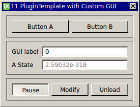

Requirements: None
Limitations: None

This is the plugin template, also known in previous versions as MyPluginGUI. It is designed to provide a simplified interface with which anyone can develop simple RTXI modules. For instructions and tutorials regarding its use, head to our tutorials wiki.